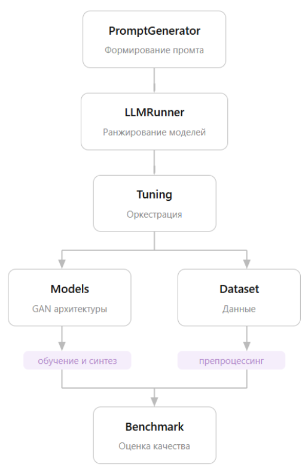

Архитектура Tab-Forge¶
Схема модулей¶

┌──────────────────────────────────────────────────────────────┐
│ Ваш датасет (CSV / DataFrame) │
└───────────────────────────┬──────────────────────────────────┘
│
▼
┌──────────────────────────────────────────────────────────────┐
│ Dataset │
│ • Унифицированная обёртка над DataFrame │
│ • DatasetInfo: размер, типы признаков, задача │
│ • train_test_split / split_folds / merge_datasets │
└───────────────┬──────────────────────┬───────────────────────┘
│ │
▼ ▼
┌──────────────────────┐ ┌───────────────────────────────────┐
│ PromptGenerator │ │ Models │
│ │ │ BaseGenerativeModel (ABC) │
│ • extract_meta_ │ │ ┌─────────────────────────────┐ │
│ features() │ │ │ CTGANSynthesizer │ │
│ • build_prompt() │ │ │ WGANGPSynthesizer │ │
│ - zero-shot │ │ │ GANMFSSynthesizer │ │
│ - few-shot │ │ │ CTABGANPlusSynthesizer │ │
│ │ │ │ TVAESynthesizer │ │
└────────┬─────────────┘ │ │ DDPMSynthesizer │ │
│ │ └─────────────────────────────┘ │
▼ │ fit() / generate() / │
┌────────────────────┐ │ structed_generate() │
│ LLMRunner │ └───────────────┬───────────────────┘
│ │ │
│ • OpenAI-compat. │ ▼
│ • n_runs запросов │ ┌───────────────────────────────────┐
│ • self-consistency│ │ AutoTuningStudy │
│ • RunnerResult │ │ • Optuna (TPE / Random sampler) │
└────────┬───────────┘ │ • k-fold CV через split_folds │
│ │ • extended / manual режимы │
│ final_ranking │ • optimize(dataset, n_trials) │
└────────────────►└───────────────┬───────────────────┘
│ best_params
▼
┌───────────────────────────────────┐
│ Benchmark │
│ • r2_metric │
│ • rmse_metric │
│ • js_mean_metric │
│ • frob_corr_metric │
│ • frob_mi_metric │
│ evaluate(synth, real) │
└───────────────────────────────────┘
Принцип модульности¶
Каждый модуль Tab-Forge — самостоятельный и не требует остальных. Вы можете:
- Использовать только Dataset + Models + Benchmark без LLM
- Запустить AutoTuningStudy вручную без LLM-рейтинга
- Использовать PromptGenerator отдельно для изучения мета-фич датасета
- Подключить свою модель к Benchmark вне Tab-Forge
Поток данных в полном пайплайне¶
1. Dataset(csv/df) ──── DatasetInfo ──────────────────────────────────────┐
│
2. PromptGenerator.build_prompt(dataset, target_metric, shot_mode) │
↑ использует Dataset.info + мета-фичи │
↓ строка-промпт │
3. LLMRunner.run(prompt, n_runs) │
↓ RunnerResult.final_ranking │
4. AutoTuningStudy(model_class=ranking[0], cv=3, ...) │
↓ objective per trial: │
split_folds(dataset, cv) ─────────────────────────────── ◄──┘
for fold in folds:
model.fit(merge(train_folds))
synth = model.structed_generate(len(val_fold))
score = benchmark.evaluate(synth, val_fold)
return mean(score)
↓ best_params
5. model.fit(train_dataset)
synth_dataset = model.structed_generate(N)
6. Benchmark.evaluate(synth_dataset, test_dataset) → BenchmarkResult
Модуль dataset¶
Ключевые экспорты: Dataset, merge_datasets, split_folds
Dataset — центральный объект библиотеки. Все модели принимают его на вход и возвращают его из structed_generate. Это позволяет беспрепятственно передавать данные между модулями.
Модуль models¶
Ключевые экспорты: 6 классов-синтезаторов
Все модели наследуют BaseGenerativeModel и реализуют единый интерфейс:
| Метод | Описание |
|---|---|
fit(dataset) |
Обучение на Dataset |
generate(n_samples) |
Генерация как pd.DataFrame |
structed_generate(n_samples) |
Генерация как Dataset (для Benchmark/AutoTuning) |
get_losses() |
История потерь в процессе обучения |
Модуль tuning¶
Ключевые экспорты: AutoTuningStudy, TuningStudy
TuningStudy — тонкая обёртка над optuna.Study. AutoTuningStudy — полноценный пайплайн CV-тюнинга с предустановленными пространствами поиска для каждой архитектуры.
Модуль benchmark¶
Ключевые экспорты: Benchmark, BenchmarkResult
Все метрики реализованы по схеме train-on-synthetic / test-on-real или через сравнение статистик. Принимает Dataset объекты.
Модуль prompt_generator¶
Ключевые экспорты: PromptGenerator
Использует pymfe для вычисления мета-фич и загружает предрасчитанные результаты экспериментов из experiment_results/ для few-shot режима.
Модуль llm_runner¶
Ключевые экспорты: LLMRunner, RunnerResult
Работает с любым OpenAI-совместимым API. Реализует self-consistency: N независимых вызовов → усреднение рангов через _aggregate.